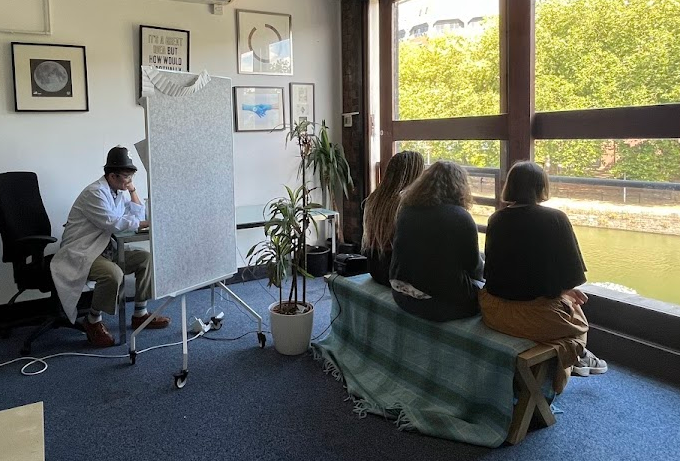
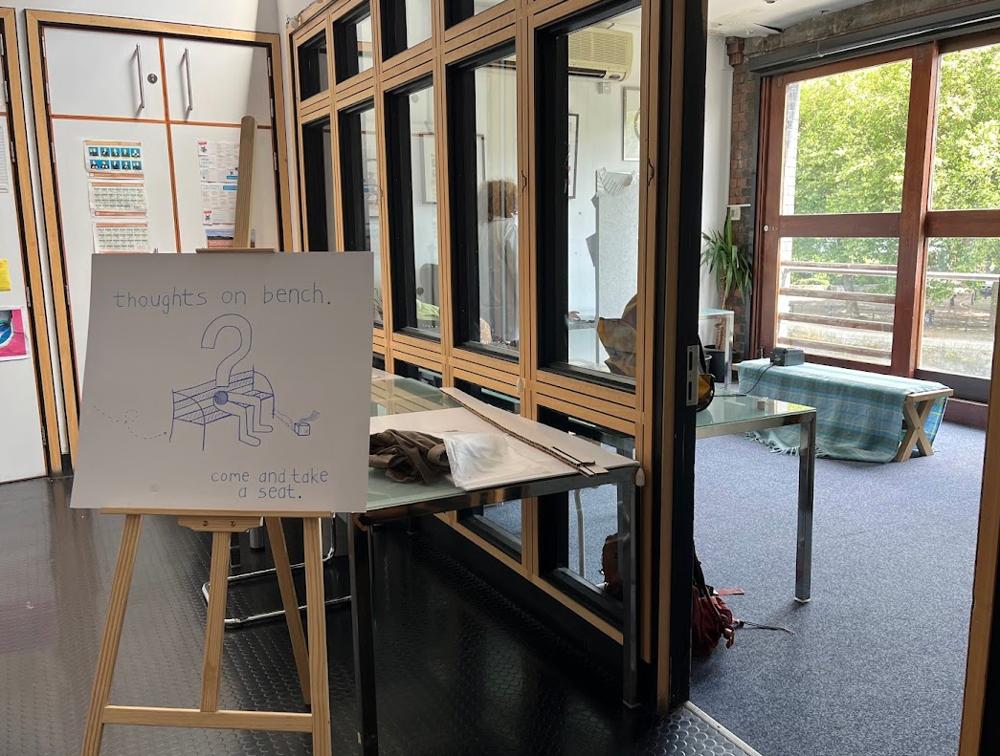

 
thoughts on bench
summer 2024
Made with Dhruv and Robin apart of the Pervasive Media Studio's Makeshift camp
A way of animating an inanimate object with AI and motivating conversations between different forms of intelligence. It was a silly project, but at the heart of it we wanted use the moment of peace that a public bench facilitates to help the audience communicate something about their individual experience. By concealling AI within a bench, we hoped to create a medium through which someone might be able to honestly express what they see and feel in the aid of the bench's education. At the end of the experience, the participant was given a drawing from the bench's perspective to show that conversation doesnt have to exist solely in speech.
introduction video